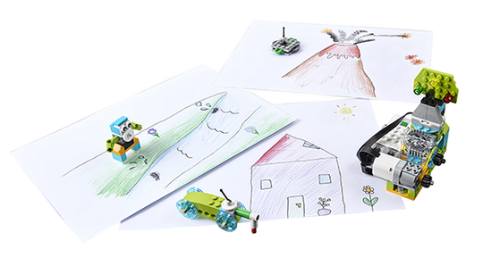
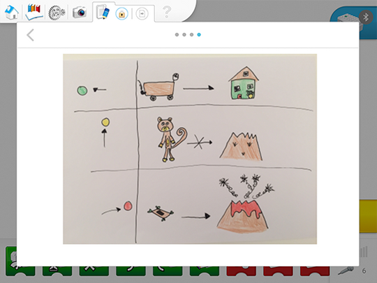

Group Discussion Questions
-
What are the different stages of a volcano?
Volcanoes are considered to be active, dormant, or extinct. There are different active stages of volcanoes and each of them is monitored differently.
-
How can scientists explore volcanoes?
Volcanologists or geologists explore active volcanoes using different devices in order to reduce the danger of such exploration. Rovers and drones are now used to collect data regarding rock composition, temperature, substances in the air, etc.
-
What would be a good way to signal that a volcano is erupting?
Different alarm systems are used around the world. Colours are often used to indicate the level of volcanic activity and the actions that should be taken.
Setting the Scene for This Project
For this project, the teams will build an alarm that is activated when it is shaken. The needle of the alarm will indicate the different stages of the volcano. The students will need to move objects to new locations following these indications:
-
The drone is flying in the air but it will only go into the volcano when the alarm is red. This is so that it can explore the erupting volcano.
-
The animal that is normally close to the volcano will move away towards the river when the volcano shows signs of activity, and it will move even farther away when the volcano is erupting.
-
When the alarm is green, the rover will wait at the scientist’s house. When the alarm is yellow, the rover will go to the same location as the animal. When the alarm is red, it will climb up the volcano in order to collect rock samples.
The students should take some time to build, draw or note the locations of the scientist’s house, the volcano and the river. For example:

Enabling the students to simplify the problem (Decomposition)
Decomposition is the main skill that is being developed during this phase. Therefore, the focus is on enabling the students to decompose the problem.
In other words:
Is the student able to explain the problem by themselves?
Is the student able to describe how they will evaluate whether or not they were successful in solving the problem?
Is the student able to break down the problem into smaller and more manageable parts?
Suggested breakdown of this problem:
How should an alarm device work?
What actions should be taken at each alarm stage?
What is the relationship between the alarm, the program and the objects that must be moved around?
Here is an example of how your students could have documented their ideas using the Documentation tool.

The text highlighted in green in the student pages suggests a place where they should document their work.
In the Explore phase, feedback should relate to whether or not the student is actively involved in the discussion by asking and answering questions, and their level of understanding of the problem.
Feedback can be given on a scale of 1 to 4:
-
The student is unable to provide answers to questions or to adequately participate in class discussions.
-
With prompting, the student is able to provide answers to questions or to adequately participate in class discussions.
-
The student is able to provide adequate answers to questions and participate in class discussions.
-
The student is able to provide extended explanations during class discussions.
Specific rubrics for assessing computational thinking skills can be found in the curriculum document.